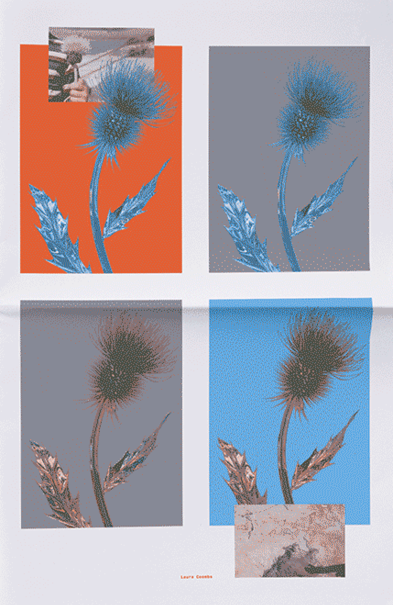
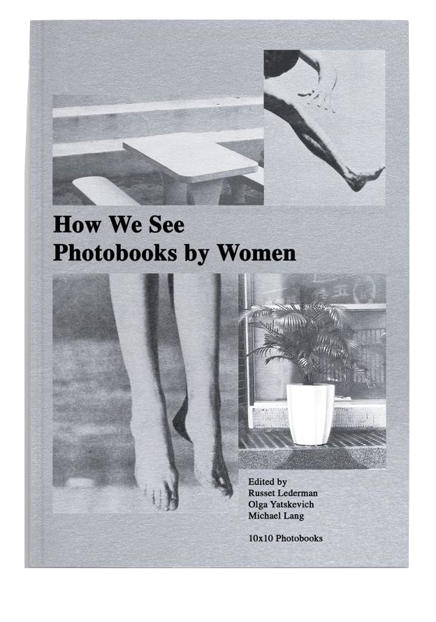

laura coombs
active!
nicole killian
tell me a little bit about yourself.
Laura Coombs is a graphic designer (the only designer in new museum) in New York, currently the Senior Designer at the New Museum of Contemporary Art and a Visiting Professor at Pratt.
you said you’re the only designer at the new museum, so does that mean everything has to go through you or you design everything and make every decision?
i make all the design and decisions, but i also work with people outside my department if its regarding the actual museum site. i talk to the marketing and get a clear from them as well as the other departments
was this the only politically engage or art activism work that you’ve done
after my grad school at yale my first book was a work i did for women photography. documentation of women photographed that illustrates the impact they they had to the medium. I think i also would be careful in using the word and term
how did you came about to this project?
shira reached out to me same as nicole was approached, and it felt very personal to her. there are factors why i participated, shira is my friend shes a very respectable designer and i very much respect her as a person, i love the people that are contributing into this cause and i also respect them as well, and lastly of course the cause itself. it is very upsetting what happened and she was, as well as the rest of the contributors were, very upset with all the children that are detained and separated she felt like she needed to do it.
was there a purpose or reasoning behind the orange and blue?
i think it was an interpretation that can be seen differently with different people. it could be a literal separation of two different colors.
what was the reason behind your design?
it felt very personal this whole project and mine was a set of images. pictures of thistle's  and also childhood pictures on top of it in 4 different pictures. the 4 sort of looks like a window in a way, you looking out a window. i remember when i was a kid playing out in the garden with my brother, in texas. i was born in texas, grew up in texas. one memory i remember was my brother picking up a thistle and giving it to me. it was such a lovely memory that i can’t imagine what it feels like being separated from my family, the children separated from their parents and siblings, i never want to feel like that. and it just makes me so upset. so i think in a way i brought my own personal memory to a personal project.
do you think you’re gonna work on projects like this soon or focus of newmuseum and teaching first?
yeah, i think im gonna stick to the museum and teaching for a while. i mean, if i have time and there’s something that comes up, who knows? but i think i don’t have much to plan for a while yeah
does your project from separated influenced your other project or the other way around?
i think in a way everything kind of weaves in together. it depends on what you define as activism but i did work on a couple of politically engaged work  How We See: Photobooks by Women with women, when trump was elected i also did some work regarding and commenting on that, so in a way everything sort of influenced each other
was this effective? was there something that you wish you had done differently?
its a good question and it hard to tell, i think i’d love to hear what other people are saying since its tricky. it wasn’t and will never be the same Nicole Killian also expressed similar thoughts on people she believes are truly doing significant difference are people that are working straight on the field. level as work on the ground but this at least there is something that was done- i don’t know.. this is a very good project. shira funded all the expense and every single copy that was sold, all the profit goes to savethechildren organization so in a way we cause a little ripple of positivity.
where do you think an artists falls into this future of movement with all the problems we are facing right now?
i think that morals and purpose and skills falls into it, if i have the opportunity to put the time and effort to do something that i feel strongly to then i will do it, i will take the opportunity. again, doing graphic design work will not be the same weight, and i can’t say we are doing much as work on ground, but i mean, its sort of hard, the new museum- we’re part of the labor museum and i designed for the labor union because there was a lot of antagonism between the museum and the workers. Laura felt like she was a designer in between that which is why she felt like it was a difficult position to juggle between. as well, and that was the sort of situation which is very difficult. i obviously want to respect my job and my work but also ethically, it is right to pay workers the living wage and i have the skills to support the effort right? so, kind of you know, you make this decision over and over and over again in your life and it depends on your own values and your own ethics and what you stand for.